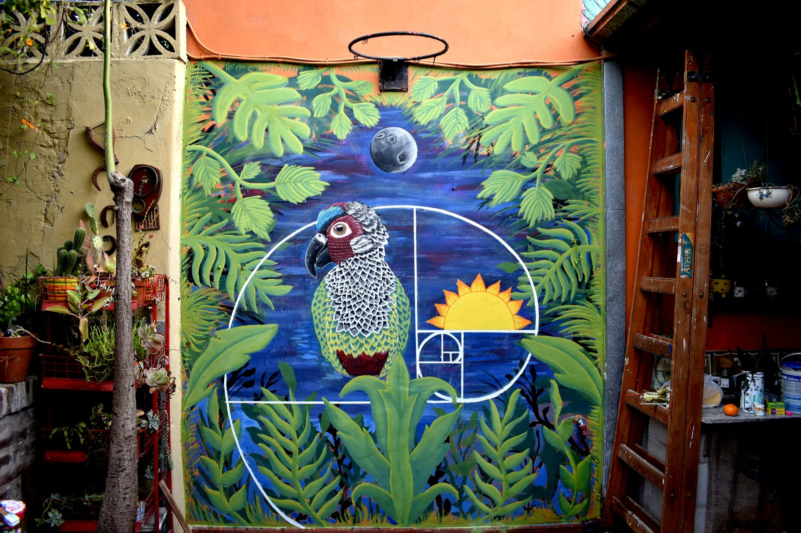
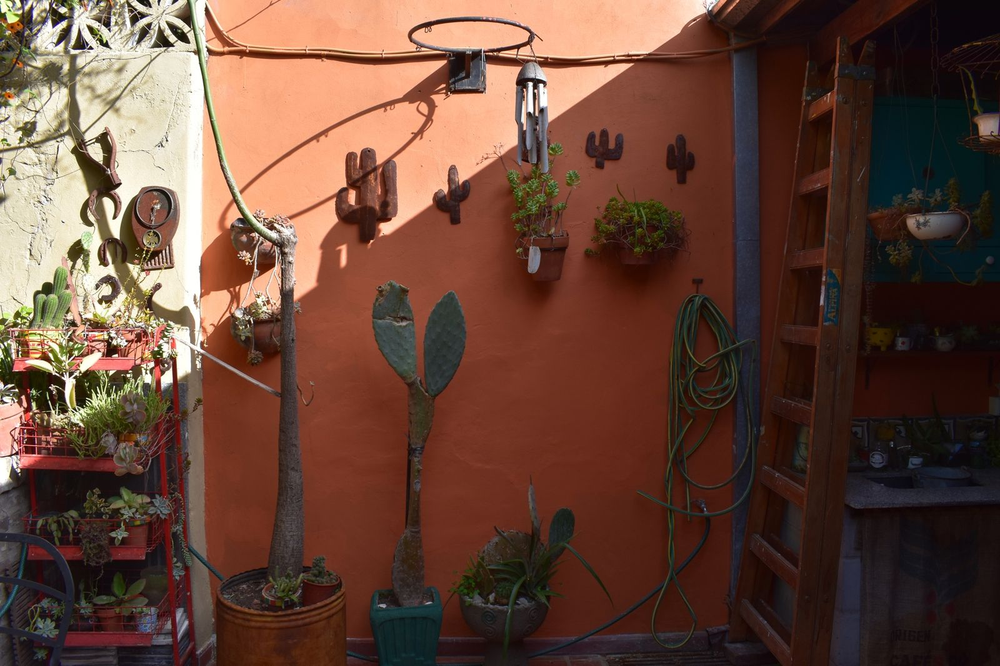
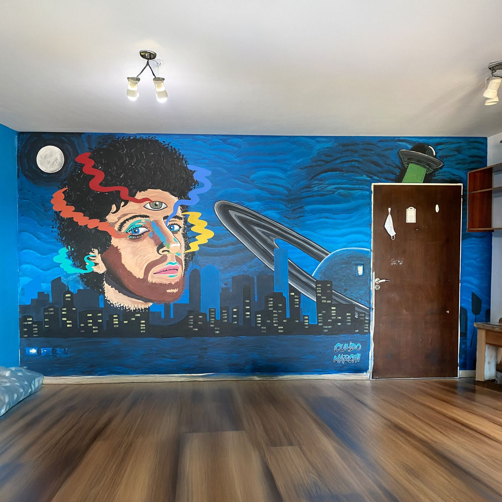
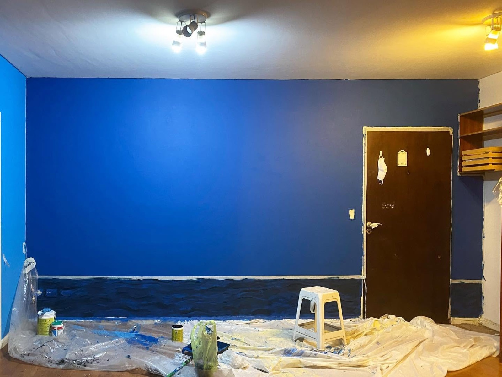

AntesDespués
AntesDespuésPulpo Flor
Arte mural diseñado para la arquitectura, el público y la historia de cada espacio.
Una obra diseñada alrededor de la luz, la escala y la arquitectura del ambiente.
Murales para tiendas, oficinas, restaurantes y espacios de hospitalidad, creados alrededor de la identidad de cada lugar.
Obras de gran escala para fachadas, festivales y espacios públicos, con materiales elegidos para resistir a la intemperie.
AntesDespuésPulpo Flor


AntesDespuésEl Círculo de la Naturaleza


AntesDespuésLa Ciudad de la Furia
Respondeme unas preguntas simples y preparo una propuesta para tu espacio, evento o equipo.